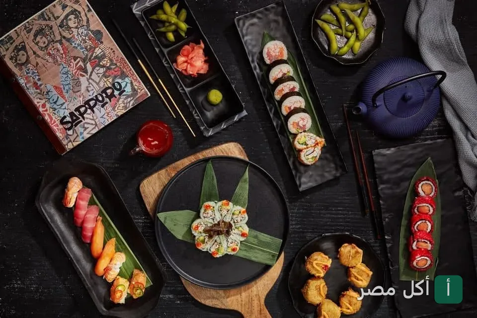

Edamame
Steamed soybeans with sea salt
180 جنيه
اختار طلبك من المنيو وكلمنا على 01022216883.

الأسعار بالجنيه المصري من صفحة أكل مصر (آخر تحديث معلن: ١٥ أغسطس ٢٠٢٦). أكد السعر مع المطعم عند الطلب.
Steamed soybeans with sea salt
180 جنيه
Seaweed salad with sesame dressing
220 جنيه
Fried tofu with dashi sauce, grated radish
250 جنيه
Crispy shrimp and vegetables
450 جنيه
Japanese style fried chicken
320 جنيه
Grilled chicken skewers with tare sauce
320 جنيه
Seared beef with ponzu sauce
450 جنيه
Crispy rice, spicy tuna, jalapeño
480 جنيه
Traditional miso soup with tofu, seaweed and scallions
120 جنيه
Clear broth with mushrooms, tofu and scallions
120 جنيه
Mixed greens, cucumber, carrot, daikon, cherry tomato
220 جنيه
Avocado, mixed greens, sesame dressing
280 جنيه
Crab sticks, cucumber, tobiko, spicy mayo
320 جنيه
Crab, avocado, cucumber, tobiko
380 جنيه
Spicy tuna, cucumber, scallion
420 جنيه
Salmon, avocado
420 جنيه
Eel, cucumber, avocado, topped with eel sauce
520 جنيه
Crab, cucumber, avocado, topped with mixed fish
520 جنيه
Shrimp tempura, avocado, cucumber, spicy mayo
480 جنيه
Spicy tuna, shrimp tempura, avocado, topped with seared salmon
480 جنيه
Grilled chicken with teriyaki sauce
450 جنيه
Grilled salmon with teriyaki sauce
550 جنيه
Grilled beef tenderloin with garlic butter sauce
650 جنيه
Shrimp, scallops, fish, vegetables
750 جنيه
Stir fried noodles with chicken and vegetables
420 جنيه
Stir fried udon noodles with chicken and vegetables
420 جنيه
Chicken teriyaki, vegetables, rice
420 جنيه
Beef teriyaki, vegetables, rice
420 جنيه
Grilled eel, vegetables, rice
420 جنيه
Chicken katsu, egg, onions, rice
420 جنيه
520 جنيه
620 جنيه
650 جنيه
550 جنيه
650 جنيه
Green tea / Mango / Vanilla
180 جنيه
280 جنيه
280 جنيه
With vanilla ice cream
280 جنيه
180 جنيه
80 جنيه
80 جنيه
80 جنيه
60 جنيه
100 جنيه
70 جنيه
120 جنيه
Orange / Mango / Lemon
120 جنيه
Assorted sashimi (15 pcs)
1 جنيه
Assorted sushi (12 pcs)
1 جنيه
Sashimi, sushi, rolls (for 2)
2 جنيه
الأصناف والأسعار من صفحة أكل مصر المنشورة. أكد تفاصيل طلبك والسعر مع المطعم عند الاتصال.